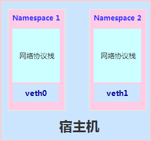
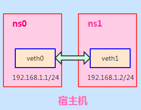
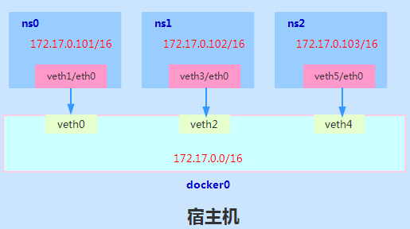
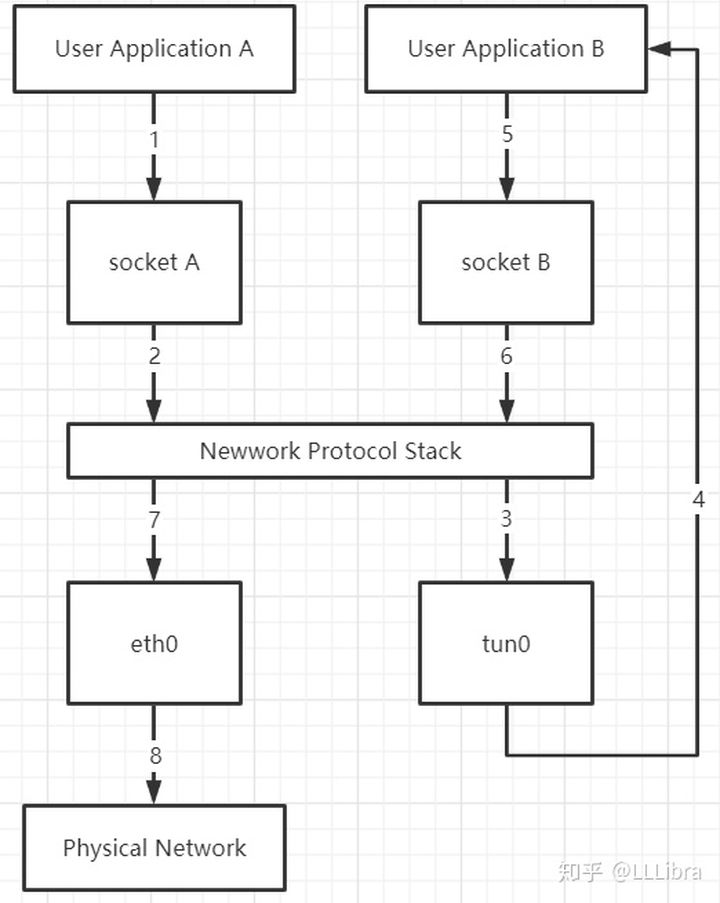
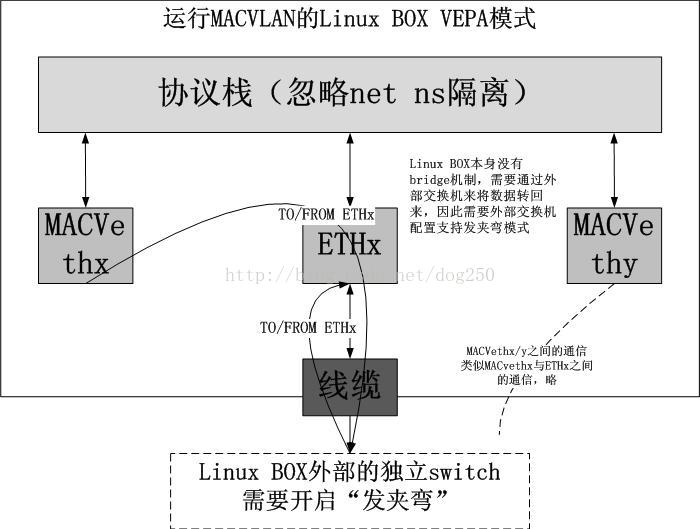

linux虚拟网络技术
在Linux虚拟化技术中, 网络层面, 通常重要的三个技术分别是Network Namespace、veth pair、以及网桥或虚拟交换机技术.
参考资料:
一. Network Namespace
Network Namespace, 它是由Linux内核提供, 是实现网络虚拟化的重要功能。
通过创建多个隔离的网络空间, 实现网络资源的隔离。
不同的Network Namespace的资源互相不可见, 彼此之间无法通信。

ip netns命令
ip命令管理的功能很多, 和Network Namespace有关的操作都在其子命令ip netns下进行的, 可以通过ip netns help查询命令帮助信息.
$ ip netns help
Usage: ip netns list
ip netns add NAME
ip netns set NAME NETNSID
ip [-all] netns delete [NAME]
ip netns identify [PID]
ip netns pids NAME
ip [-all] netns exec [NAME] cmd ...
ip netns monitor
ip netns list-id
# ip netns add命令创建一个ns0的网络命名空间
$ ip netns add ns0
# 查看命名空间
$ ip netns list
# 命名空间所在的目录
# 新创建的 Network Namespace 会出现在/var/run/netns/目录下。如果需要管理其他不是 ip netns 创建的 network namespace, 只要在这个目录下创建一个指向对应 network namespace 文件的链接即可。
$ ls /var/run/netns/
对于每个 Network Namespace 来说, 它会有自己独立的网卡、路由表、ARP 表、iptables 等和网络相关的资源。
ip命令提供了ip netns exec子命令可以在对应的 Network Namespace 中执行命令。
# 查看网络命名空间ns0的网卡信息
$ ip netns exec ns0 ip addr
# 默认loopback网卡是不启用的,下面是启用
$ ip netns exec ns0 ip link set lo up
# 在网络命名空间ns0打开shell
$ ip netns exec ns0 /bin/bash
二. veth pair
默认情况下, network namespace 是不能和主机网络或者其他 network namespace 通信的
可以使用 Linux 提供的veth pair来完成通信, veth pair你可以理解为使用网线连接好的两个接口, 把两个端口放到两个namespace中, 那么这两个namespace就能打通。

# 创建veth pair
$ ip link add type veth
# 查看veth pair
$ ip link
# 可以创建时指定两个端点的名称
$ ip link add veth001 type veth peer name veth002
# 再创建一个网络命名空间ns1
$ ip netns add ns1
# 将veth pair 分别加入ns0 ns1
$ ip link set veth0 netns ns0
$ ip link set veth1 netns ns01
# 分别为这对veth pair 配置ip地址并启用
$ ip netns exec ns0 ip addr add 192.168.1.98/24 dev veth0
$ ip netns exec ns0 ip link set veth0 up
$ ip netns exec ns1 ip addr add 192.168.1.99/24 dev veth1
$ ip netns exec ns1 ip link set veth1 up
# 查看这对veth pair的状态
$ sudo ip netns exec ns0 ip addr
$ sudo ip netns exec ns1 ip addr
# 验证互通
$ ip netns exec ns0 ping -c 10 192.168.1.99
$ ip netns exec ns1 ping -c 10 192.168.1.98
删除 Network Namespace
$ ip netns delete ns0
$ ip netns delete ns1
三. bridge
虽然veth pair可以实现两个 Network Namespace 之间的通信, 但 veth pair 有一个明显的缺陷, 就是只能实现两个网络接口之间的通信。
如果多个network namespace需要进行通信, 则需要借助bridge。

# 创建网桥
$ ip link add docker0 type bridge
# 配置网桥ip
$ ip addr add 172.17.0.1/16 dev docker0
# 启动网桥
$ ip link set dev docker0 up
# 查看网桥状态
$ ip addr docker0
# or
$ ip link show docker0
# or
$ ifconfig docker0
# 删除网桥
$ ip link delete docker0
其它操作同上,可以将所有veth pair加入网桥,形成多个Network Namespace互通
四. tap/tun
tap/tun设备文件就像一个管道, 一端连接着用户空间, 一端连接着内核空间。当用户程序向文件 /dev/net/tun 或 /dev/tap0 写数据时, 内核就可以从对应的 tunX 或 tapX 接口读到数据, 反之, 内核可以通过相反的方式向用户程序发送数据。
- TUN 是一个虚拟网络设备, 它模拟的是一个三层设备, 通过它可以处理来自网络层的数据包, 也就是 IP 数据包。由于它只模拟到了 IP 层, 所以它无法与物理网卡做 bridge, 也没有 MAC 地址, 但是可以通过三层交换的方式来与物理网卡相互通信。
- TAP 模拟的是一个二层设备, 它比 TUN 更加深入, 它可以处理数据链路层的数据包, 拥有 MAC 地址, 可以与物理网卡做 bridge, 支持 MAC 层广播, 也可以给它设置 IP 地址。

